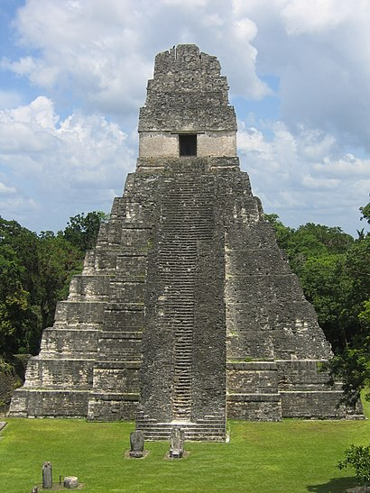
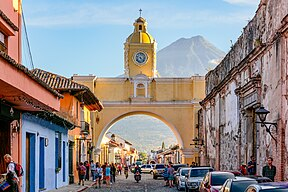
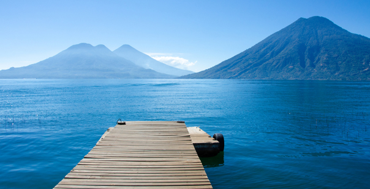
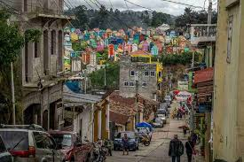
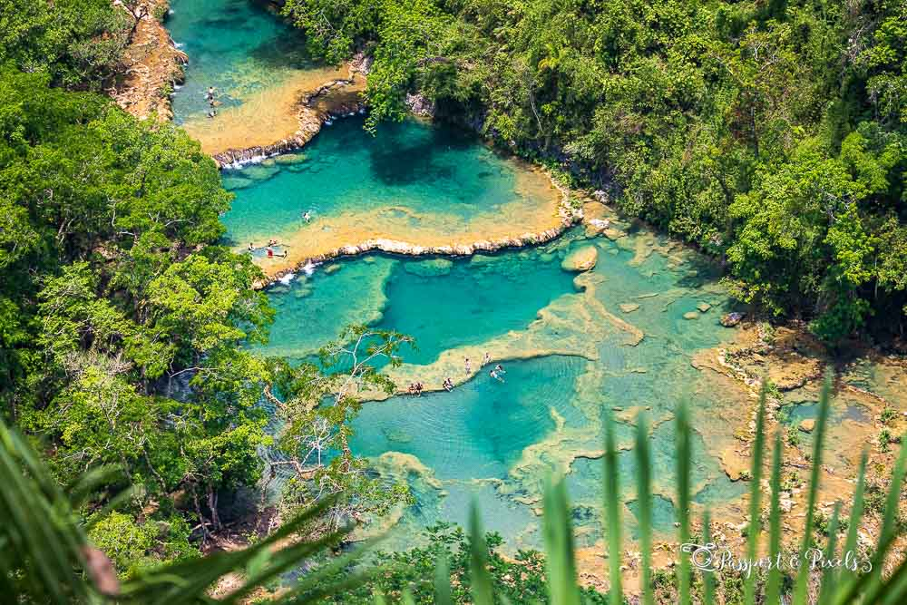

Lugares para visitar en Guatemala
Tikal
Tikal es uno de los sitios arqueológicos más importantes de la civilización maya, ubicado en el departamento de Petén
¿Que hacer?
- Explorar las pirámides y templos mayas, como el Templo del Gran Jaguar.
- Hacer una caminata por la selva circundante, observando la fauna y flora local.
- Escuchar los sonidos de la selva al amanecer desde la cima de uno de los templos.

Antigua Guatemala
Antigua es una ciudad colonial famosa por su bien conservada arquitectura española barroca. Es Patrimonio de la Humanidad por la UNESCO.
¿Que hacer?
- Recorrer las ruinas de iglesias y conventos históricos, como el Convento de las Capuchinas.
- Subir al Cerro de la Cruz para disfrutar de una vista panorámica de la ciudad.
- Participar en un tour de café para aprender sobre la producción local.

Lago de Atitlan
Considerado uno de los lagos más bellos del mundo, está rodeado de volcanes y pequeños pueblos indígenas.
¿Que hacer?
- Realizar un paseo en lancha entre los pueblos que rodean el lago, como Santiago Atitlán y San Juan La Laguna.
- Practicar kayak o paddleboard en las tranquilas aguas del lago.
- Subir el Volcán San Pedro para tener una vista impresionante del lago y sus alrededores.

Chichicastenango
Conocido por su mercado colorido y vibrante, donde se venden artesanías, textiles y productos locales.
¿Que hacer?
- Visitar el mercado los jueves o domingos, cuando está en su máximo esplendor.
- Conocer la Iglesia de Santo Tomás, un sitio donde se mezclan tradiciones mayas y cristianas.
- Participar en una ceremonia maya tradicional en la parte trasera de la iglesia.

Semuc Champey
Un conjunto de piscinas naturales de color turquesa formadas sobre un río subterráneo, rodeadas de un exuberante bosque tropical.
¿Que hacer?
- Nadar en las piscinas naturales y disfrutar de sus aguas cristalinas.
- Hacer una caminata hasta el mirador para obtener una vista panorámica de Semuc Champey.
- Explorar las cuevas de Kanba, ubicadas cerca del lugar, donde puedes nadar en ríos subterráneos.
